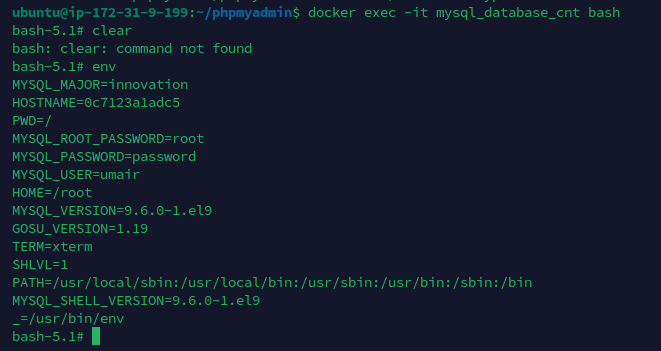
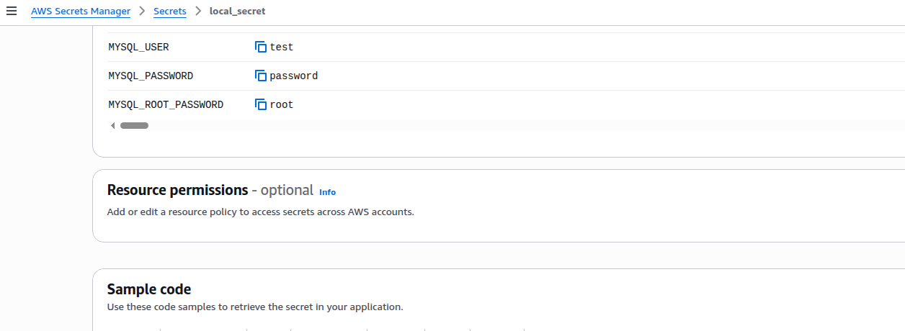

Secure Secrets for Docker —
Without the Pain
Kubernetes-grade secret management for Docker and Docker Compose — no Kubernetes required. Inject secrets into your workloads from Cloud providers with a simple Go operator.

REAL-WORLD VERIFICATION: SECRETS INJECTED TO MYSQL CONTAINER


How Docker Secret Operator Works
A production-grade, sidecar-free architecture that bridges Cloud Secrets and Docker Runtimes.
Secret Provider
AWS, Azure, Vault, Huawei
DSO Operator
Rotator • Cache • API
Containers Receive Injected Secrets
No files on disk. Pure in-memory injection.
Centralized Cloud Visibility
Stop guessing where your secrets are sourced. DSO provides direct visibility into your cloud provider's secret state and how they map to your local containers.

Get Started in
Under 1 Minute
Create Configuration
Define your provider and mapping in /etc/dso/dso.yaml
Run One-Command Installer
DSO handles binaries, plugins, and systemd setup automatically.
Deploy with DSO
Wrap your existing docker-compose commands effortlessly.
# 1. Install Docker Secret Operator
curl -fsSL https://raw.githubusercontent.com/.../install.sh | sudo bash
# 2. Start the Agent service
sudo systemctl start dso-agent
# 3. Deploy App
dso compose up -d
View real deployment examples in the /examples directory.
Why Docker Secret Operator?
See how DSO stacks up against legacy secret management approaches.
Built for Modern
DevOps Workflows
DSO isn't just an agent; it's a productivity platform for handling infrastructure security. Wrap any Docker Compose workload with a single prefix.
dso fetch Debug
Quickly verify secret availability and mapping without running containers.
dso compose Deploy
The transparent wrapper you need. Works exactly like docker compose.
Simple, Reliable YAML
Configure your entire secret topology in a single, well-structured file. No complex logic, just simple mappings.
CGO_ENABLED=0
Fully static binaries with zero dynamic library dependencies.
Unix Socket IPC
Secure communication between CLI and Agent.
# Source: examples/aws-compose/dso.yaml provider: aws config: region: us-east-2 agent: cache: true refresh_interval: 5s secrets: - name: prod/database/creds inject: env mappings: DB_PASSWORD: DATABASE_PASS DB_USER: DATABASE_USER
Built for the
Community.
Open source, extensible, and free forever. Help us build the future of Docker infrastructure.